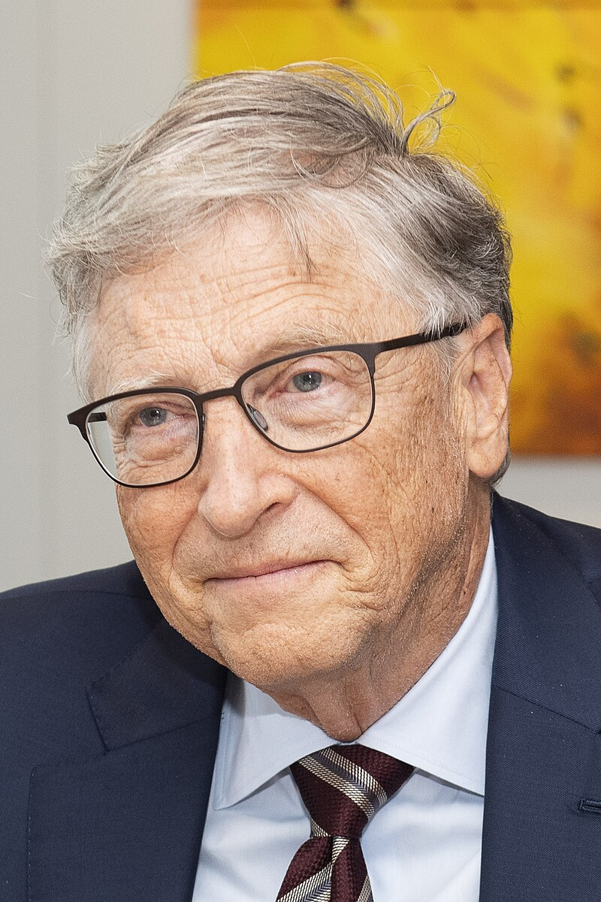

1- Jeff Besos (amazon)

Biografia
Jeff Bezos, licenciado en ingeniería eléctrica e informática, ya mostró interés desde su más tierna infancia por las áreas científicas y tecnológicas. Trabajó durante algunos años en Wall Street hasta que decidió establecerse por su cuenta y dedicarse a lo que realmente le motivaba: la venta de libros por internet. Así nació Amazon, pero no con su denominación actual, sino como Cadabra.com, una librería online cuya oficina estaba ubicada en los bajos de la casa del propio Bezos. Posteriormente, cambió el nombre a Amazon y comenzó a diversificar su actividad vendiendo distintos productos, más allá de los libros.
empresas a las que esta a cargo:


2- Bill Gates (Microsoft)
Biografia
William Gates, más conocido como Bill Gates, es el cofundador de Microsoft junto a Paul Allen. Tal y como ha hecho público la revista Forbes, su capital asciende a más de 93.000 millones de euros. Los desarrollos de software y los equipos de Microsoft han marcado un antes y un después en la historia de las TIC.
Desde niño, Gates fue competitivo y demostró un gran interés por las incipientes computadoras. Aunque comenzó a estudiar leyes en Harvard, abandonó la carrera para trabajar en Honeywell junto a Paul Allen, su amigo de la adolescencia y con quien fundaría Microsoft, uno de los principales gigantes tecnológicos del mundo.